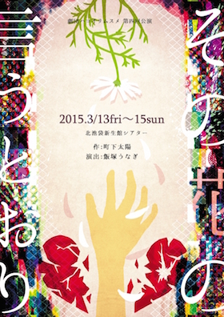
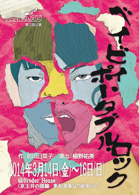
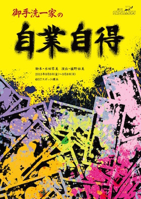
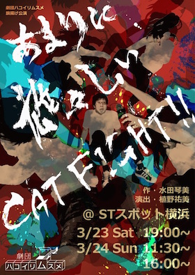

神奈川は横浜を拠点に活動中の演劇団体です。
「劇団員（＋客演陣）の女性群に対し、ゲストとして男性キャスト1名を主人公にする」という構成をとりながら、コメディを中心とした愉快痛快爽快演劇を目論む。 そのため、劇団名の没案には"ハーレム"の単語が含まれていたことも…。
作品




劇団員
- 主宰 佐藤 和 15期
- 演出 植野 祐美 15期
- 脚本 水田 琴美 15期
- 舞台監督･美術 木下 千尋 15期
- 音響 村上 美月 15期
- 小道具 しんじ なお 15期
略歴
2013
- 旗揚げ公演「あまりに雄々しいCAT FIGHT!!」STスポット横浜
- 第二回公演「御手洗一家の自業自得」STスポット横浜
2014
- 第三回公演「ベイビィ･ポータブル･ロック」BroaderHouse
2015
- 第４回公演『その花の言うとおり』北池袋新生館シアター
- 活動休止